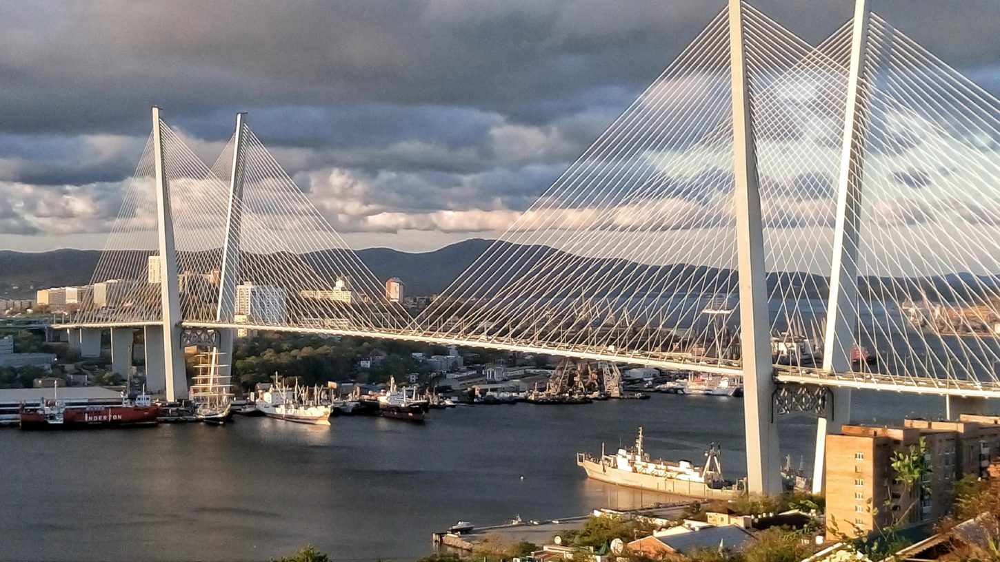
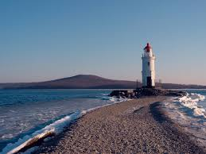
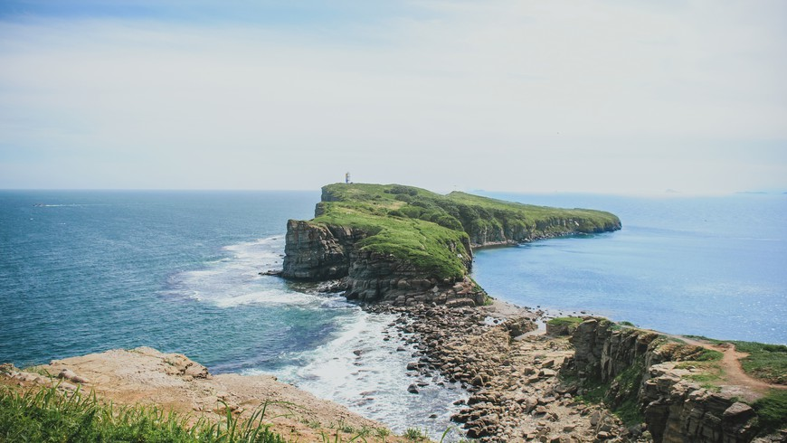

Русский мост
Русский мост, соединяющий полуостров Назимова с мысом Новосильского на острове Русском имеет самый длинный в
мире пролет среди вантовых мостов. Его длина составляет 1104 метра. Общая длина моста - 3,1 километра. Кроме
того Русский мост является 6 в мире по высоте.

Золотой мост
Золотой мост — вантовый мост через бухту Золотой Рог. Идея строительства моста через Золотой Рог была выдвинута ещё в конце XIX века. В разное время её реализации мешали русско-японская война, Первая мировая, революция, Вторая мировая война и перестройка. Только в 2005 году началось проектирование строительства моста.

Токаревский маяк
Токаревский маяк - действующий маяк во Владивостоке, туристическая и имиджевая достопримечательность.
Расположен на южной точке кошки Токарёвского, обеспечивает проход судов в узости пролива Босфор Восточный в
заливе Петра Великого Японского моря. Во время приливов подход к маяку размывает вода, создавая красивый
пейзаж.

Остров Русский
Остров Русский, хотя и расположен всего в километре от Владивостока, но имеет свой уникальный климат. Помимо
различных пляжей, знаменитого Мыса Тобизина, на острове располагаются Дальневосточный федеральный университет
и Приморский Океанариум.

Мыс Тобизина
Мыс Тобизина — самый южный мыс острова Русский. Очень живописное место. Когда стоишь на нём, кажется будто находишься на краю мира. Поход до него занимает по меньшей мере час и тоже полон невероятных пейзажей.

Сопка Бурачка
Высота сопки составляет 138 метров. с вершины открывается вид на Золотой Рог, Диомид, центр города и Первомайский район. Своё официальное имя сопка получила в честь Евгения Степановича Бурачка, первого командира военного порта Владивосток, незаурядного человека, много сделавшего для города.